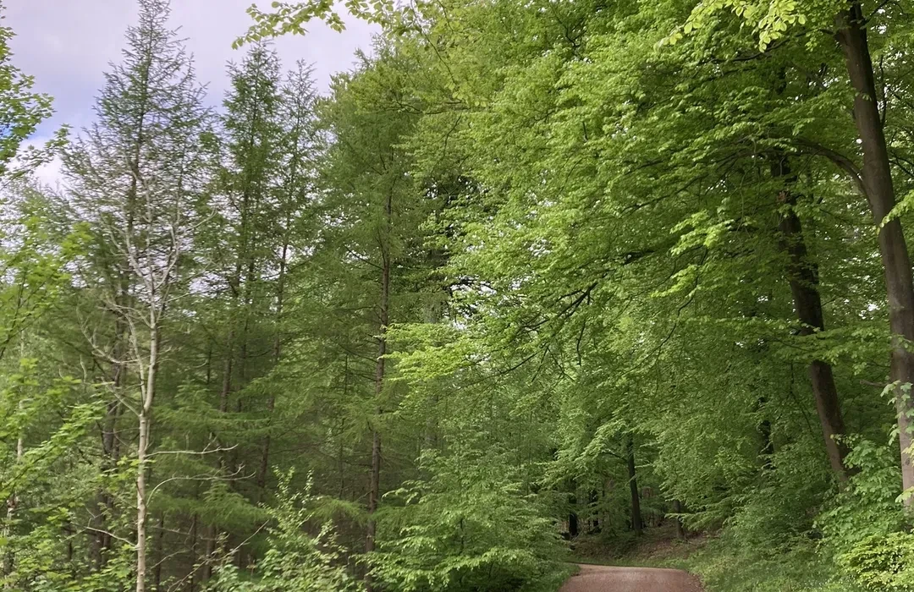

Helhedsorienteret pleje og omsorg
Hjortekær tilbyder en helhedsorienteret pleje og omsorg med udgangspunkt i den enkeltes behov, ønsker og ressourcer.
Vores indsats bygger på selvbestemmelse, respekt, nærhed og kvalitet – værdier, der kendetegner Gentofte Kommunes ældrepolitik.
Vi arbejder målrettet for at:
- Sikre kvalitet i pleje, omsorg og rehabilitering, så beboeren oplever sig mødt som et unikt menneske med ret til at træffe egne valg.
- Understøtte beboerens sundhed og trivsel gennem individuelle indsatser og mål, herunder forebyggelse af sygdom og tab af funktionsevne.
- Styrke det gode samarbejde og skabe tillid mellem personale, beboere og pårørende.
- Sikre en værdig livsafslutning, præget af ro, respekt og medinddragelse af den døende og dennes netværk.
- Fremme livskvalitet i hverdagen, hvor små glæder, relationer og meningsfulde aktiviteter understøtter det gode ældreliv.
- Arbejde systematisk med kvalitetssikring og udvikling i overensstemmelse med nationale krav og kommunale kvalitetsstandarder.
Værdigrundlag
- Ansvar: Vi tager ansvar for vores faglighed og for, at beboerne oplever sig trygge og velplejede.
- Faglighed: Vi baserer vores pleje på viden, refleksion og anerkendte teorier.
- Omsorg: Vi møder den enkelte med nærvær, respekt og empati.
- Værdighed i livsafslutning: Vi skaber trygge rammer og understøtter den døendes ønsker og behov.
- Livskvalitet: Vi fremmer meningsfuldhed, deltagelse og glæde i dagligdagen.
- Godt samarbejde: Vi arbejder tværfagligt og inddrager pårørende og beboere som aktive partnere.
- Tillid og tryghed: Vi er til stede og skaber stabile relationer.
